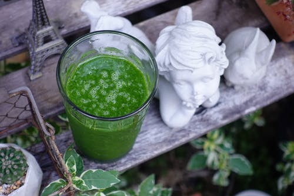

Vitamina de 6 ingredientes

Ingredientes
id="lista1"
1/4 xícara de salsa fresca (picada)
2 mangas frescas ou congeladas (fatiadas)
1/2 pepino fresco
1 xicara de água de coco sem açúcar
1 Colher de Sopa, suco de limão (espremido na hora)
1 Colher de Sopa, flocos de coco
Preparo
- Modo de preparo: Coloque todos os ingredientes no liquidificador
- Bater no liquidificador até ficar homogêneo
- Polvilhe com alguns flocos de coco extra...
Beneficios Da Vitamina
Se você não é fan de vegetais ou sabe que não consome vegetais suficientes durante o dia, a melhor maneira de resolver esse problema é se familiarizar com os Smoothies verdes. Eles são fáceis de fazer e levarão apenas alguns minutos do seu tempo.